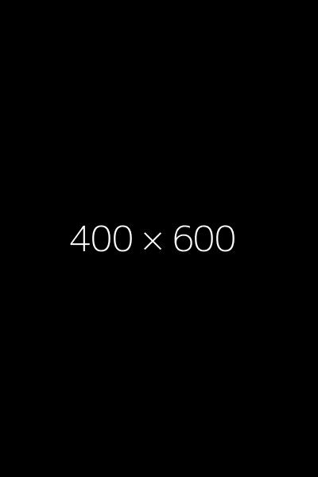

¿Qué es el Balón Intragástrico?
El balón intragástrico es un método mínimamente invasivo que se coloca por endoscopía para ayudar en la pérdida de peso. Consiste en introducir un balón de silicona en el estómago, que se llena con solución salina para ocupar espacio y generar sensación de saciedad.
